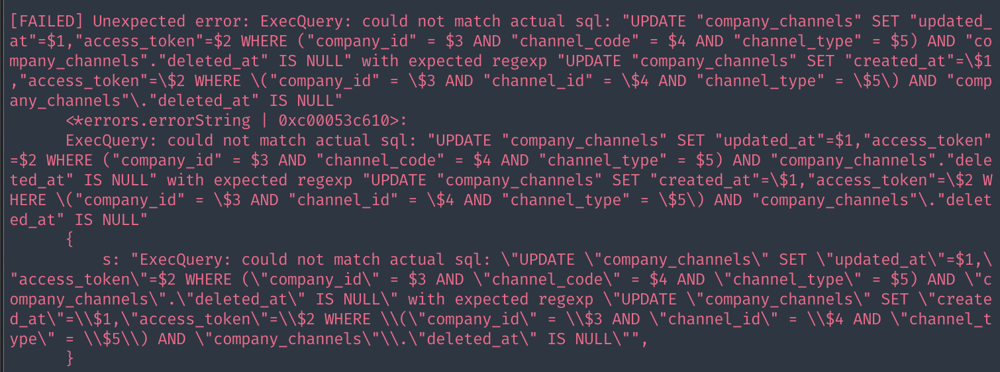
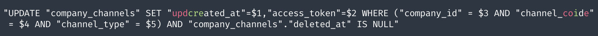
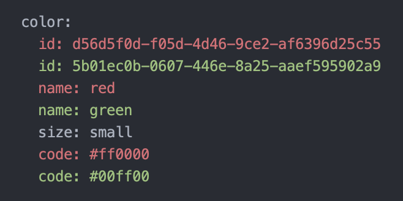

ezpkg.io - Collection of packages to make writing Go code easier
As I work on various Go projects, I often find myself creating utility functions, extending existing packages, or developing packages to solve specific problems. Moving from one project to another, I usually have to copy or rewrite these solutions. So I created ezpkg.io to have all these utilities and packages in one place. Hopefully, you’ll find them useful as well.
Let’s look at some problems that these packages are solving.
Handling errors in functions that always return nil errors
For example, let’s look at the following function using strings.Builder from the standard library:
import "fmt"
import "strings"
func SliceToString1[T any](slice []T) string {
var b strings.Builder
for _, v := range slice {
_, err := fmt.Fprint(&b, v)
if err != nil {
panic(err)
}
}
return b.String()
}
func SliceToString2[T any](slice []T) (string, error) {
var b strings.Builder
for _, v := range slice {
_, err := fmt.Fprint(&b, v)
if err != nil {
return "", err
}
}
return b.String(), nil
}
func SliceToString3[T any](slice []T) string {
var b strings.Builder
for _, v := range slice {
_, _ = fmt.Fprint(&b, v) //nolint:errcheck
}
return b.String()
}
In SliceToString1, we add a panic check even though strings.Builder will always return nil error. In SliceToString2, we correctly handle the returned error by making the caller worry about checking an error that never occurs! In SliceToString3, we skip the check because the errors are nil anyway, but we still need to add _, _ = to make the IDE happy and //nolint:errcheck because our company blocks merging any PR that does not pass the golint CI check.
Another way, we could create our utility functions to simplify the code, then copy or write those fprint and must from package to package and project to project:
func SliceToString4[T any](slice []T) string {
var b strings.Builder
for _, v := range slice {
fprint(&b, v)
}
return b.String()
}
func fprint(w io.Writer, v any) {
must(fmt.Fprint(w, v))
}
func must[T any](v T, err error) T {
if err != nil {
panic(err)
}
return v
}
Import “ezpkg.io/stringz”
Here is how the example is rewritten with ezpkg.io/stringz using stringz.Builder:
import "ezpkg.io/stringz"
func SliceToString[T any](slice []T) string {
var b stringz.Builder // change to stringz
for _, v := range slice {
b.Print(v) // look ma, no error!🔥
}
return b.String()
}
Other examples include bytez.Buffer and fmtz.State. They share the same interface and include various methods that are ready to use. Let’s look at WriteString and its variant WriteStringZ:
package stringz // import "ezpkg.io/stringz"
type Builder strings.Builder
func (b *Builder) unwrap() *strings.Builder {
return (*strings.Builder)(b)
}
func (b *Builder) WriteString(s string) (int, error) {
return b.unwrap().WriteString(s)
}
func (b *Builder) WriteStringZ(s string) int {
n, _ := b.unwrap().WriteString(s)
return n
}
The WriteString method exposes the original method and keeps the same signature, while the WriteStringZ variant eliminates the need for handling errors. Writing Go code is eazier now!🥰
Sometimes, we just want to skip all the errors to quickly write a simple CLI script
Using typez.CoalesceX, errorz.Must, errorz.Skip, errorz.Validate, and their variants, we can streamline error handling:
import "ezpkg.io/errorz"
func main() {
var err error
projectDir := os.Getenv("PROJECT_DIR")
errorz.ValidateTof(&err, projectDir != "", "no PROJECT_DIR")
errorz.ValidateTof(&err, len(os.Args) > 1, "must at least 1 arg")
// panic if any validation fails
errorz.MustZ(err)
// get the file path
jsonFile := os.Args[1] // already check: len(os.Args)>1
// panic if the file extension is not .json
if !filepath.IsAbs(jsonFile) {
jsonFile = filepath.Clean(filepath.Join(projectDir, jsonFile))
}
errorz.MustValidate(strings.HasSuffix(jsonFile, ".json"))
// read the file, skip error if it does not exist
data, _ := os.ReadFile(jsonFile)
// default to empty json object
data = typez.CoalesceX(data, []byte("{}"))
// process then print the formatted json
object := errorz.Must(process(data))
formatted := errorz.Must(json.MarshalIndent(object, "", "\t"))
fmt.Printf("%s", formatted)
}
Comparing values in tests with diff ignoring spaces
Another day, we are making some changes to a SQL repository method using gorm.io/gorm and gomock. The test code looks like this:
var updateSQL = `UPDATE "company_channels"
SET "updated_at"=$1,"access_token"=$2
WHERE ("company_id" = $3 AND "channel_code" = $4 AND "channel_type" = $5) AND "company_channels"."deleted_at" IS NULL`
dbCtrl.SQLMock.ExpectExec(regexp.QuoteMeta(updateSQL)).
WithArgs(
sqlmock.AnyArg(),
companyChannel.AccessToken,
companyChannel.CompanyID,
companyChannel.ChannelCode,
companyChannel.ChannelType,
).WillReturnResult(sqlmock.NewResult(0, 1))
We might encounter this error, which is hard to read and see what is wrong:

Import “ezpkg.io/diffz”
Rewrite the assertion function:
diffz.IgnoreSpace().DiffByChar(actualSQL, expectedSQL)
This provides cleaner output and quickly highlights differences:

Support for tests with random values
Using diffz.Placeholder().AndIgnoreSpaces().DiffByLine() or simply diffz.ByLineZ():
expect := `
color:
id: ████████-████-████-████-████████████
name: red
size: small
code: #ff0000`
red := `
color:
id: d56d5f0d-f05d-4d46-9ce2-af6396d25c55
name: red
size: small
code: #ff0000`
green := `
color:
id: 5b01ec0b-0607-446e-8a25-aaef595902a9
name: green
size: small
code: #00ff00`
fmt.Println("no diff")
fmt.Println(diffz.ByLineZ(red, expect))
fmt.Println("diff")
fmt.Println(diffz.ByLineZ(red, green))
The first diffz.ByLineZ(red, expect) will be considered equal, because of the use of placeholder █. The second diffz.ByLineZ(red, green) will output:

ezpkg.io - Collection of Go packages
These packages are created to enhance the functionality of the standard library and other popular packages. They are intended to be used together with other packages rather than replacing them. The APIs are designed based on my experience working with Go, focusing on simplicity and ease of use. I will try to follow best practices in Go, but not always. I also tend to choose a more performance implementation if possible.
Versioning
All packages are released together with the same version number to simplify management, as they often call each other. When the API evolves, the version number is incremented for all packages.
Why should you NOT use these packages?
- More dependencies: These packages will add more dependencies to your project.
- Early development: This project is in its early stages and will have API changes. There are other packages that are more mature and offer more features.
- Customization: Sometimes, writing your own code allows for better customization. You can also copy code from these packages and modify it to fit your specific needs.
Why should you use these packages?
- You find yourself copying the same code over and over.
- You are starting a new project and want some simple and easy-to-use packages.
- You are learning Go and want to see how some common tasks are implemented.
Stay Tuned
Most packages are usable but the API may change over time. There are a lot of missing utilities that I will add sooner or later. If you need something or want to share your thoughts, feel free to open an issue or start a discussion. I’m curious to see if these packages are making life eazier for you! 👋
Happy coding! 🚀
Author
I'm Oliver Nguyen. A software maker working mostly in Go and JavaScript. I enjoy learning and seeing a better version of myself each day. Occasionally spin off new open source projects. Share knowledge and thoughts during my journey. Connect with me on , , , and .